Supplied unofficial study solution, not an official GTU answer key. Answers and teaching diagrams have not been independently verified. Use Enlarge image for small details.આ આપેલો બિનસત્તાવાર અભ્યાસ ઉકેલ છે, સત્તાવાર GTU જવાબવહી નથી. જવાબો અને આકૃતિઓની સ્વતંત્ર ચકાસણી થઈ નથી. વાંચવા માટે ચિત્ર મોટું કરો.
AC Fundamentalએસી ફંડામેન્ટલ
Complete paper coverage: all 28 answer parts are included. Q1(c) and Q2–Q5 include complete OR alternatives; both choices are answered. English and Gujarati are kept separate — use the language buttons above to switch.આખા paperનો સમાવેશ: બધા 28 જવાબ ભાગો છે. Q1(c) અને Q2–Q5માં સંપૂર્ણ OR વિકલ્પો છે; બંને પસંદગીઓના જવાબ છે. એક જ paperમાં English અને ગુજરાતી બંને છે — ઉપરના English / ગુજરાતી button દબાવીને ભાષા બદલો. ગુજરાતીમાં મુખ્ય English keywords (Power factor, Resonance, Impedance, Current, Voltage) એમ જ રાખેલા છે જેથી પરીક્ષામાં સરળ પડે.
How to read: tap any card to open its answer. Formulas are in blue boxes, final answers in green boxes. Diagrams are original teaching schematics.કેવી રીતે વાંચવું: જવાબ ખોલવા કોઈપણ card પર ટેપ કરો. સૂત્રો વાદળી બોક્સમાં છે, અંતિમ જવાબ લીલા બોક્સમાં છે. Numerical અને derivation નોટબુક જેવા લખેલા છે — ઉપર-નીચે fraction (ઉપર numerator, વચ્ચે line, નીચે denominator) જેથી સરળ સમજાય. આકૃતિઓ મૂળ શિક્ષણ આકૃતિઓ છે.
Q1 · Fundamentals of ACપ્ર.1 · AC ના પાયા
Q.1 (a) Define cycle, time period, frequency.પ્ર.1 (અ) સાયકલ, આવર્તકાળ અને આવૃત્તિ વ્યાખ્યાયિત કરો.3 marks3 ગુણ
Cycle: One complete repetition of the alternating waveform, from one zero crossing through positive and negative peaks back to the same starting point. For a sine wave, one cycle is 360° or 2π radians.
Time period (T): Time taken to complete one cycle. Unit: second (s). T = 1/f.
Frequency (f): Number of cycles completed in one second. Unit: hertz (Hz). f = 1/T. In India, mains supply is 50 Hz, so T = 1/50 = 0.02 s = 20 ms.
Example: if T = 20 ms, f = 50 Hz and w = 314 rad/s.
Cycle (સાયકલ): ઓલ્ટરનેટિંગ વેવફોર્મનું એક સંપૂર્ણ પુનરાવર્તન, એક શૂન્ય ક્રોસિંગથી સકારાત્મક અને નકારાત્મક શિખરોમાંથી પસાર થઈને એ જ શરૂઆતના બિંદુ પર પાછા આવવું. સાઈન વેવ માટે, એક સાયકલ 360° અથવા 2π રેડિયન છે.
Time period (આવર્તકાળ, T): એક સાયકલ પૂર્ણ કરવા લાગતો સમય. એકમ: સેકન્ડ (s). T = 1/f.
Frequency (આવૃત્તિ, f): એક સેકન્ડમાં પૂર્ણ થતા સાયકલની સંખ્યા. એકમ: હર્ટ્ઝ (Hz). f = 1/T. ભારતમાં મેઈન્સ સપ્લાય 50 Hz છે, તેથી T = 1/50 = 0.02 s = 20 ms.
ઉદાહરણ: જો T = 20 ms, તો f = 50 Hz અને w = 314 rad/s.
Q.1 (b) Explain RLC series circuit in detail with all diagrams.પ્ર.1 (બ) RLC સીરીઝ સર્કિટ બધા ડાયાગ્રામ સાથે વિગતવાર સમજાવો.4 marks4 ગુણ
Circuit: Resistor R, inductor L and capacitor C are connected in series across an AC supply v = Vm sin wt. The same current I flows through all three elements.
Phasor: VR is in phase with I, VL leads I by 90°, VC lags I by 90°. The resultant voltage V is the phasor sum:
Impedance: Z = R + j(XL - XC). Phase angle phi = tan-1((XL - XC)/R). If XL > XC, circuit is inductive (current lags); if XC > XL, capacitive (current leads); if XL = XC, resonance, Z = R and phi = 0.
Power: Only R consumes average power. P = I2R = VI cos phi.
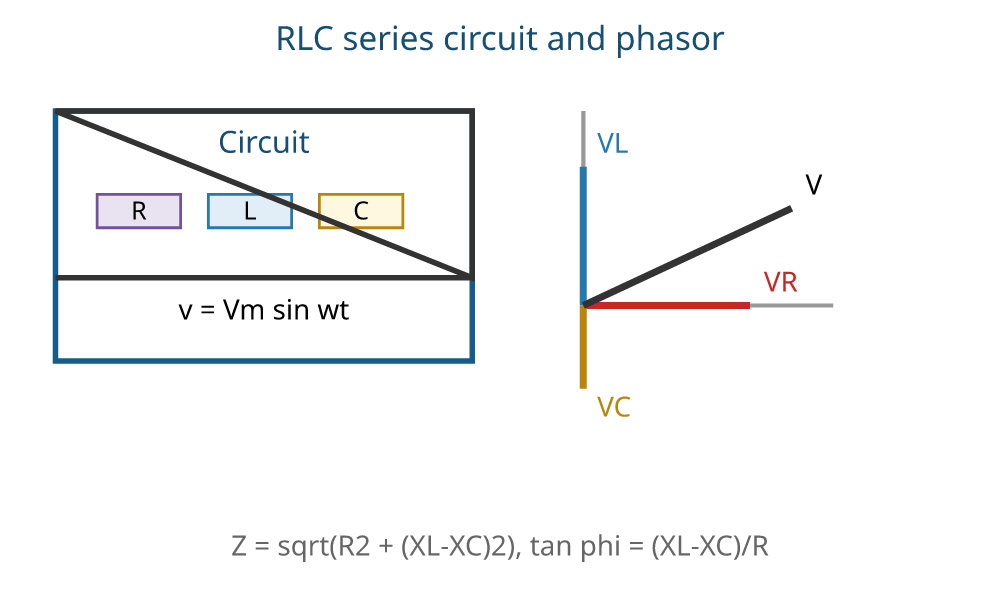
Circuit (સર્કિટ): Resistor (રેઝિસ્ટર) R, Inductor (ઇન્ડક્ટર) L અને કેપેસિટર C AC સપ્લાય v = Vm sin wt માં સીરીઝમાં જોડેલા છે. ત્રણેય તત્વોમાંથી એક જ કરંટ I વહે છે.
Phasor (ફેઝર): VR એ I સાથે ફેઝમાં છે, VL એ I કરતાં 90° આગળ છે, VC એ I કરતાં 90° પાછળ છે. પરિણામી વોલ્ટેજ V એ ફેઝર સરવાળો છે:
Impedance (ઇમ્પિડન્સ): Z = R + j(XL - XC). ફેઝ કોણ phi = tan-1((XL - XC)/R). જો XL > XC, સર્કિટ ઇન્ડક્ટિવ (કરંટ પાછળ) છે; જો XC > XL, કેપેસિટિવ (કરંટ આગળ) છે; જો XL = XC, રેઝોનન્સ, Z = R અને phi = 0.
Power (પાવર): ફક્ત R સરેરાશ પાવર વાપરે છે. P = I2R = VI cos phi.
Q.1 (c) Explain principle of generation of alternating voltage and derive equation.પ્ર.1 (ક) ઓલ્ટરનેટિંગ વોલ્ટેજના જનરેશનનો સિદ્ધાંત સમજાવો અને સૂત્ર તારવો.7 marks7 ગુણ
Principle: When a coil rotates in a uniform magnetic field, the magnetic flux linked with the coil changes continuously. By Faraday's law, an EMF is induced: e = -N dPhi/dt. As the coil rotates, flux varies sinusoidally, so induced EMF is sinusoidal (alternating).
Derivation: Let coil area A, N turns, magnetic field B, angular speed w. At angle theta = wt from the position where coil normal is along B, flux is:
Induced EMF:
where Em = N B A w is the peak EMF. Hence e = Em sin wt, a sine wave. If coil is shorted through load, current i = e/Z is also sinusoidal.
Key points: EMF is zero when flux is maximum (coil normal along B, theta=0) and maximum when flux is zero (coil plane along B, theta=90°). Frequency f = w2 pi depends on rotation speed.
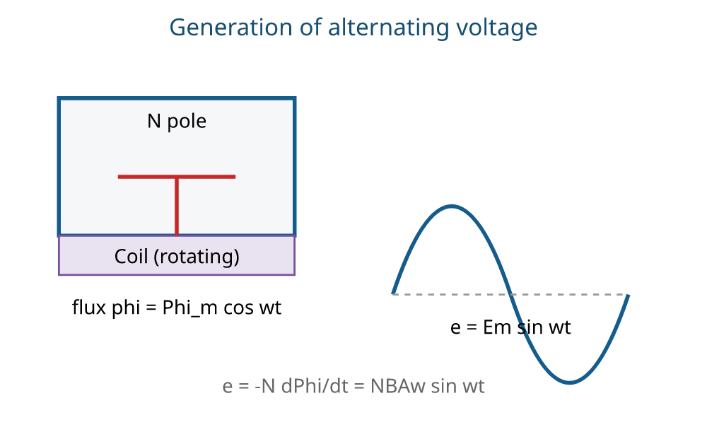
Principle (સિદ્ધાંત): જ્યારે કોઈલ એકસરખા ચુંબકીય ક્ષેત્રમાં ફરે છે, ત્યારે કોઈલ સાથે જોડાયેલ ચુંબકીય ફ્લક્સ સતત બદલાય છે. ફેરાડેના નિયમ મુજબ, EMF પ્રેરિત થાય છે: e = -N dPhi/dt. કોઈલ ફરે તેમ ફ્લક્સ સાઈનસોઈડલ બદલાય છે, તેથી પ્રેરિત EMF સાઈનસોઈડલ (ઓલ્ટરનેટિંગ) છે.
Derivation (તારવણી): કોઈલ ક્ષેત્રફળ A, N આંટા, ચુંબકીય ક્ષેત્ર B, કોણીય ઝડપ w. જે સ્થિતિમાં કોઈલ નોર્મલ B સાથે હોય ત્યાંથી કોણ theta = wt પર, ફ્લક્સ:
પ્રેરિત EMF:
જ્યાં Em = N B A w એ શિખર EMF છે. તેથી e = Em sin wt, સાઈન વેવ છે. જો કોઈલ લોડ દ્વારા શોર્ટ થાય, તો કરંટ i = e/Z પણ સાઈનસોઈડલ છે.
મુખ્ય મુદ્દા: જ્યારે ફ્લક્સ મહત્તમ હોય (કોઈલ નોર્મલ B સાથે, theta=0) ત્યારે EMF શૂન્ય અને જ્યારે ફ્લક્સ શૂન્ય હોય (કોઈલ પ્લેન B સાથે, theta=90°) ત્યારે EMF મહત્તમ. આવૃત્તિ f = w2 pi ફરવાની ઝડપ પર આધાર રાખે છે.
Q.1 (c) OR Define average value. Derive the equation of average value.પ્ર.1 (ક) OR એવરેજ કિંમત વ્યાખ્યાયિત કરો અને તેનું સૂત્ર તારવો.7 marks7 ગુણ
Definition: Average value is the mean of instantaneous values over a specified interval. For AC, average over a full cycle is zero (positive and negative halves cancel). Practically, average value means half-cycle average (rectified average), used for rectifiers and meters.
Derivation (sine wave): v = Vm sin wt. Half-cycle average from 0 to pi:
Similarly, Iavg = 0.637 Im. Full-cycle average is zero because second half (pi to 2 pi) gives -2Vm/pi.
Note: Average value is used in rectifier output and moving-coil meters. RMS value (0.707 Vm) is used for power.

Average value (એવરેજ કિંમત): એ નિર્દિષ્ટ અંતરાલમાં ત્વરિત કિંમતોનો સરેરાશ છે. AC માટે, સંપૂર્ણ સાયકલ પર સરેરાશ શૂન્ય છે (સકારાત્મક અને નકારાત્મક અર્ધભાગ સરખામણીમાં). વ્યવહારમાં, એવરેજ કિંમત એટલે અર્ધ-સાયકલ સરેરાશ (રેક્ટિફાઇડ સરેરાશ), જે રેક્ટિફાયર અને મીટરમાં વપરાય છે.
તારવણી (સાઈન વેવ): v = Vm sin wt. 0 થી pi સુધી અર્ધ-સાયકલ સરેરાશ:
એ જ રીતે, Iavg = 0.637 Im. સંપૂર્ણ સાયકલ સરેરાશ શૂન્ય છે કારણ કે બીજો અર્ધભાગ (pi થી 2 pi) -2Vm/pi આપે છે.
નોંધ: એવરેજ કિંમત રેક્ટિફાયર આઉટપુટ અને મૂવિંગ-કોઈલ મીટરમાં વપરાય છે. RMS કિંમત (0.707 Vm) પાવર માટે વપરાય છે.
Q2 · Power factor, values and phasorsપ્ર.2 · પાવર ફેક્ટર, કિંમતો અને ફેઝર
Q.2 (a) Define unity, lagging and leading power factor.પ્ર.2 (અ) યુનિટી, લેગિંગ અને લીડિંગ પાવર ફેક્ટર વ્યાખ્યાયિત કરો.3 marks3 ગુણ
Power factor (cos phi): Ratio of active power to apparent power. cos phi = PS = RZ. It is the cosine of the angle between voltage and current.
| Type | Condition | Current vs voltage |
|---|---|---|
| Unity (cos phi = 1) | Pure resistive load, phi = 0 | In phase |
| Lagging (cos phi < 1) | Inductive load (XL > XC) | Current lags voltage |
| Leading (cos phi < 1) | Capacitive load (XC > XL) | Current leads voltage |
Unity PF gives maximum power for given current. Low PF increases line current and losses.
Power factor (પાવર ફેક્ટર, cos phi): એક્ટિવ પાવર અને એપરેન્ટ પાવરનો ગુણોત્તર. cos phi = PS = RZ. તે વોલ્ટેજ અને કરંટ વચ્ચેના કોણનો કોસાઈન છે.
| પ્રકાર | શરત | કરંટ વિરુદ્ધ વોલ્ટેજ |
|---|---|---|
| યુનિટી (cos phi = 1) | શુદ્ધ રેઝિસ્ટિવ લોડ, phi = 0 | ફેઝમાં |
| લેગિંગ (cos phi < 1) | ઇન્ડક્ટિવ લોડ (XL > XC) | કરંટ વોલ્ટેજ કરતાં પાછળ |
| લીડિંગ (cos phi < 1) | કેપેસિટિવ લોડ (XC > XL) | કરંટ વોલ્ટેજ કરતાં આગળ |
યુનિટી PF આપેલા કરંટ માટે મહત્તમ પાવર આપે છે. ઓછો PF લાઈન કરંટ અને નુકસાન વધારે છે.
Q.2 (b) Define form factor, peak factor, average value, phase.પ્ર.2 (બ) ફોર્મ ફેક્ટર, પીક ફેક્ટર, એવરેજ કિંમત અને ફેઝ વ્યાખ્યાયિત કરો.4 marks4 ગુણ
Form factor: Ratio of RMS value to average (half-cycle) value. Kf = VrmsVavg = 1.11 for sine wave.
Peak factor (crest factor): Ratio of maximum value to RMS value. Kp = VmVrms = 1.414 for sine wave.
Average value: Half-cycle mean, Vavg = 0.637 Vm. Full-cycle average is zero.
Phase: Position of a waveform in its cycle, measured in degrees/radians from reference. Phase difference is the angle between two quantities of same frequency. E.g. in RL circuit, current lags voltage by phi.
Form factor (ફોર્મ ફેક્ટર): RMS કિંમત અને એવરેજ (અર્ધ-સાયકલ) કિંમતનો ગુણોત્તર. Kf = VrmsVavg = 1.11 સાઈન વેવ માટે.
Peak factor (પીક ફેક્ટર (ક્રેસ્ટ ફેક્ટર): મહત્તમ કિંમત અને RMS કિંમતનો ગુણોત્તર. Kp = VmVrms = 1.414 સાઈન વેવ માટે.
એવરેજ કિંમત: અર્ધ-સાયકલ સરેરાશ, Vavg = 0.637 Vm. સંપૂર્ણ સાયકલ સરેરાશ શૂન્ય છે.
Phase (ફેઝ): સાયકલમાં વેવફોર્મની સ્થિતિ, સંદર્ભથી ડિગ્રી/રેડિયનમાં માપવામાં આવે છે. ફેઝ તફાવત એ સમાન આવૃત્તિના બે રાશિઓ વચ્ચેનો કોણ છે. દા.ત. RL સર્કિટમાં, કરંટ વોલ્ટેજ કરતાં phi પાછળ છે.
Q.2 (c) (a) Convert rectangular to polar: (i) 10+j20 (ii) -20-j35. (b) A=100-j40, B=30+j60 find A-B, B-A, A+B.પ્ર.2 (ક) (a) રેક્ટેંગ્યુલરથી પોલરમાં ફેરવો: (i) 10+j20 (ii) -20-j35. (b) A=100-j40, B=30+j60 તો A-B, B-A, A+B શોધો.7 marks7 ગુણ
(a)(i) 10+j20: Magnitude = sqrt(102+202) = sqrt(500) = 22.36. Angle = tan-12010 = 63.43°.
(a)(ii) -20-j35: Magnitude = sqrt(400+1225) = sqrt(1625) = 40.31. Third quadrant: angle = 180° + tan-13520 = 180° + 60.26° = 240.26° (or -119.74°).
(b) A=100-j40, B=30+j60:
Magnitudes: |A-B| = |B-A| = sqrt(702+1002) = 122.07, |A+B| = sqrt(1302+202) = 131.53. Angles: A-B = -55.01°, B-A = 124.99°, A+B = 8.75°.
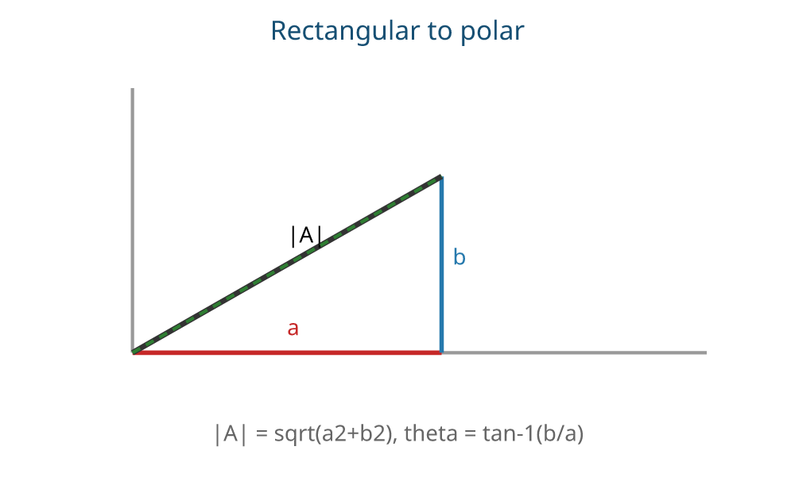
(a)(i) 10+j20: પરિમાણ = sqrt(102+202) = sqrt(500) = 22.36. કોણ = tan-1(20/10) = 63.43°.
(a)(ii) -20-j35: પરિમાણ = sqrt(400+1225) = sqrt(1625) = 40.31. ત્રીજો ચતુર્થાંશ: કોણ = 180° + tan-1(35/20) = 180° + 60.26° = 240.26° (અથવા -119.74°).
(b) A=100-j40, B=30+j60:
પરિમાણ: |A-B| = |B-A| = 122.07, |A+B| = 131.53. કોણ: A-B = -55.01°, B-A = 124.99°, A+B = 8.75°.
Q.2 (a) OR Define apparent power, active power and reactive power.પ્ર.2 (અ) OR એપરેન્ટ પાવર, એક્ટિવ પાવર અને રિએક્ટિવ પાવર વ્યાખ્યાયિત કરો.3 marks3 ગુણ
Apparent power (S): Product of RMS voltage and current, S = V I (VA). It is the power supplied by source, not all converted to work.
Active power (P): Average power actually doing work (heat, light, mechanical). P = V I cos phi = I2R (watt). Only resistor consumes it.
Reactive power (Q): Power exchanged between source and L/C, not doing work. Q = V I sin phi = I2X (VAR). Positive for inductive, negative for capacitive.
Apparent power (એપરેન્ટ પાવર, S): RMS વોલ્ટેજ અને કરંટનો ગુણાકાર, S = V I (VA). તે સ્ત્રોત દ્વારા પૂરો પડતો પાવર છે, બધો કાર્યમાં ફેરવાતો નથી.
Active power (એક્ટિવ પાવર, P): ખરેખર કાર્ય કરતો સરેરાશ પાવર (ગરમી, પ્રકાશ, યાંત્રિક). P = V I cos phi = I2R (વોટ). ફક્ત રેઝિસ્ટર તેનો વપરાશ કરે છે.
Reactive power (રિએક્ટિવ પાવર, Q): સ્ત્રોત અને L/C વચ્ચે ફેરવાતો પાવર, કાર્ય કરતો નથી. Q = V I sin phi = I2X (VAR). ઇન્ડક્ટિવ માટે સકારાત્મક, કેપેસિટિવ માટે નકારાત્મક.
Q.2 (b) OR From V=141.4 sin 628t find (i) Vm (ii) frequency (iii) RMS (iv) Average.પ્ર.2 (બ) OR V=141.4 sin 628t પરથી (i) Vm (ii) આવૃત્તિ (iii) RMS (iv) એવરેજ શોધો.4 marks4 ગુણ
Given v = 141.4 sin 628t. Compare with v = Vm sin wt, so Vm = 141.4 V, w = 628 rad/s.
(i) Maximum: Vm = 141.4 V.
(ii) Frequency: f = w2 pi = 100 Hz.
(iii) RMS: Vrms = Vm√2 = 100 V.
(iv) Average (half-cycle): Vavg = 0.637 Vm = 0.637×141.4 = 90.1 V (approx 90 V).
આપેલ v = 141.4 sin 628t. v = Vm sin wt સાથે સરખાવતાં, Vm = 141.4 V, w = 628 rad/s.
(i) મહત્તમ: Vm = 141.4 V.
(ii) આવૃત્તિ: f = w2 pi = 100 Hz.
(iii) RMS: Vrms = Vm√2 = 100 V.
(iv) એવરેજ (અર્ધ-સાયકલ): Vavg = 0.637 Vm = 0.637×141.4 = 90.1 V (લગભગ 90 V).
Q.2 (c) OR Define RMS value. And derive equation of it.પ્ર.2 (ક) OR RMS કિંમત વ્યાખ્યાયિત કરો અને તેનું સૂત્ર તારવો.7 marks7 ગુણ
Definition: RMS (root-mean-square) value is the DC-equivalent value that produces the same heating effect. Vrms = sqrt(mean of v2 over a cycle). It is the value read by AC voltmeters and used in power calculations.
Derivation: v = Vm sin wt. Mean square over full cycle:
Using sin2 theta = (1-cos 2 theta)/2, integral of cos term over full cycle is zero:
Similarly, Irms = Im/√2 = 0.707 Im. For sine wave, RMS = 1.11 × average (half-cycle).
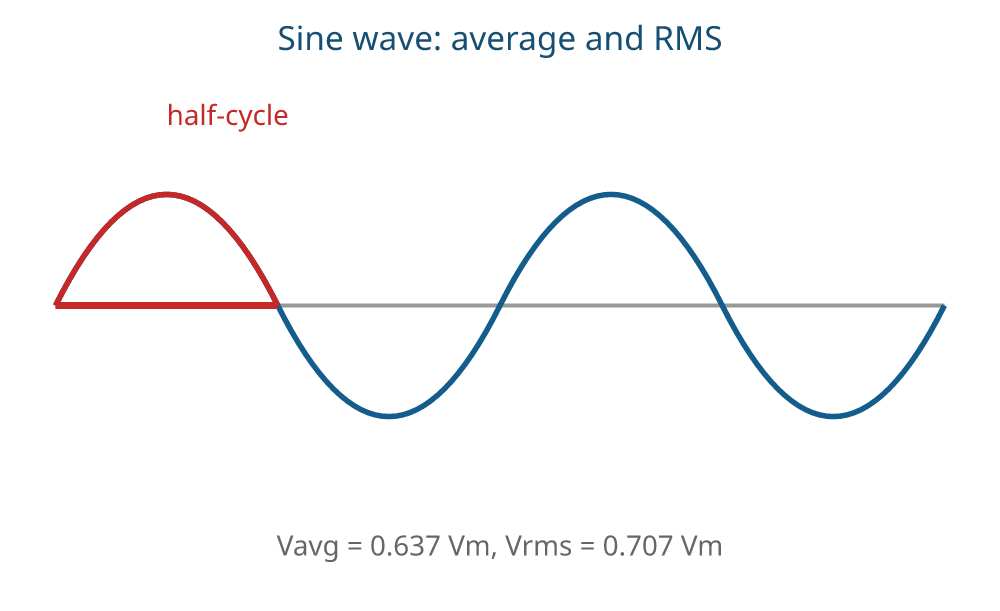
RMS value (RMS કિંમત): (રુટ-મીન-સ્ક્વેર) કિંમત એ DC-સમકક્ષ કિંમત છે જે સમાન ગરમી અસર ઉત્પન્ન કરે છે. Vrms = sqrt(સાયકલ પર v2 નો સરેરાશ). તે AC વોલ્ટમીટર દ્વારા વંચાય છે અને પાવર ગણતરીમાં વપરાય છે.
Derivation (તારવણી): v = Vm sin wt. સંપૂર્ણ સાયકલ પર સરેરાશ વર્ગ:
એ જ રીતે, Irms = Im/√2 = 0.707 Im. સાઈન વેવ માટે, RMS = 1.11 × એવરેજ (અર્ધ-સાયકલ).
Q3 · RL, RC series circuits and resonanceપ્ર.3 · RL, RC સીરીઝ સર્કિટ અને રેઝોનન્સ
Q.3 (a) State three applications of parallel resonance.પ્ર.3 (અ) પેરેલલ રેઝોનન્સના ત્રણ ઉપયોગો જણાવો.3 marks3 ગુણ
Parallel resonance occurs when inductive and capacitive branches in parallel give maximum impedance and minimum current at f0 = 1/(2 pi√(LC)).
- Tuned circuits / filters: Selects a single frequency (radio, TV tuner, IF amplifier) by high impedance at f0.
- Power factor correction: Capacitor in parallel with inductive load improves PF.
- High-impedance voltmeter / notch filter: Rejects a specific frequency; used in measurement and communication.
Also used in induction heating and as a high-Q trap circuit.
Parallel resonance (પેરેલલ રેઝોનન્સ) ત્યારે થાય છે જ્યારે પેરેલલમાં ઇન્ડક્ટિવ અને કેપેસિટિવ શાખાઓ f0 = 1/(2 pi√(LC)) પર મહત્તમ ઇમ્પિડન્સ અને ન્યૂનતમ કરંટ આપે છે.
- ટ્યુન કરેલા સર્કિટ / ફિલ્ટર: f0 પર ઊંચા ઇમ્પિડન્સથી એક જ આવૃત્તિ પસંદ કરે છે (રેડિયો, TV ટ્યુનર, IF એમ્પ્લિફાયર).
- પાવર ફેક્ટર સુધારો: ઇન્ડક્ટિવ લોડ સાથે પેરેલલ કેપેસિટર PF સુધારે છે.
- ઊંચા ઇમ્પિડન્સ વોલ્ટમીટર / નોચ ફિલ્ટર: ચોક્કસ આવૃત્તિને નકારે છે; માપન અને સંચારમાં વપરાય છે.
Q.3 (b) RL series: I=1.5 A, V=300 V, P=225 W. Find (i) R (ii) XL (iii) PF.પ્ર.3 (બ) RL સીરીઝ: I=1.5 A, V=300 V, P=225 W. (i) R (ii) XL (iii) PF શોધો.4 marks4 ગુણ
Given: V = 300 V, I = 1.5 A, P = 225 W.
(iii) Power factor first: P = V I cos phi → cos phi = PV I = 0.5 lagging (RL circuit).
(i) Resistance: P = I2R → R = PI2 = 100 ohm. Check: R = V cos phi / I = 300×0.5/1.5 = 100 ohm.
(ii) Inductive reactance: Z = VI = 200 ohm. XL = sqrt(Z2-R2) = sqrt(40000-10000) = sqrt(30000) = 173.2 ohm.
આપેલ: V = 300 V, I = 1.5 A, P = 225 W.
(iii) પહેલાં પાવર ફેક્ટર: P = V I cos phi → cos phi = 225/(300×1.5) = 0.5 lagging (RL સર્કિટ).
(i) અવરોધ: P = I2R → R = 225/2.25 = 100 ohm.
(ii) ઇન્ડક્ટિવ રિએક્ટન્સ: Z = V/I = 200 ohm. XL = sqrt(Z2-R2) = sqrt(30000) = 173.2 ohm.
Q.3 (c) Explain RL series circuit in detail and derive equation of power.પ્ર.3 (ક) RL સીરીઝ સર્કિટ વિગતવાર સમજાવો અને પાવરનું સૂત્ર તારવો.7 marks7 ગુણ
Circuit: R and L in series across v = Vm sin wt. Same current I flows. VR = I R (in phase), VL = I XL (leads by 90°), XL = wL.
Power derivation: Instantaneous power p = v i. With v = Vm sin wt, i = Im sin(wt-phi):
Average over cycle: only in-phase component survives. Using identity, average of sin wt cos wt term is zero:
Power triangle: P = V I cos phi (watt), Q = V I sin phi (VAR), S = V I (VA). cos phi = RZ = PS. Inductor consumes no average power, only reactive power.
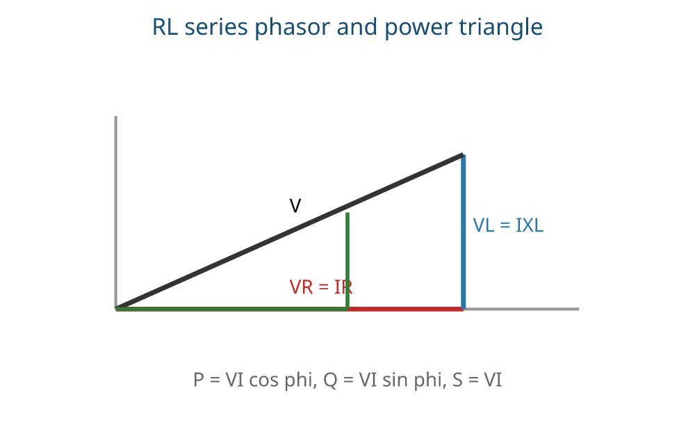
સર્કિટ: R અને L સીરીઝમાં v = Vm sin wt પર. એક જ કરંટ I વહે છે. VR = I R (ફેઝમાં), VL = I XL (90° આગળ), XL = wL.
Power derivation (પાવર તારવણી): ત્વરિત પાવર p = v i. v = Vm sin wt, i = Im sin(wt-phi) સાથે:
Power triangle (પાવર ત્રિકોણ): P = V I cos phi (વોટ), Q = V I sin phi (VAR), S = V I (VA). cos phi = RZ = PS. ઇન્ડક્ટર સરેરાશ પાવર વાપરતું નથી, ફક્ત રિએક્ટિવ પાવર.
Q.3 (a) OR Define (a) conductance (b) susceptance (c) admittance.પ્ર.3 (અ) OR (a) કંડક્ટન્સ (b) સસેપ્ટન્સ (c) એડમિટન્સ વ્યાખ્યાયિત કરો.3 marks3 ગુણ
Conductance (G): Reciprocal of resistance, G = 1R (siemens, S). It represents the resistive (active) part of admittance.
Susceptance (B): Reciprocal of reactance, B = 1X (S). Inductive susceptance is negative, capacitive is positive. B = 1/XL (inductive) or 1/XC (capacitive).
Admittance (Y): Reciprocal of impedance, Y = 1Z = G + jB (S). Magnitude |Y| = 1/|Z|. For parallel circuits, Y adds directly: Y = Y1+Y2+... .
Conductance (કંડક્ટન્સ, G): અવરોધનો વ્યસ્ત, G = 1/R (સીમેન્સ, S). તે એડમિટન્સનો રેઝિસ્ટિવ (એક્ટિવ) ભાગ દર્શાવે છે.
Susceptance (સસેપ્ટન્સ, B): રિએક્ટન્સનો વ્યસ્ત, B = 1X (S). ઇન્ડક્ટિવ સસેપ્ટન્સ નકારાત્મક, કેપેસિટિવ સકારાત્મક છે.
Admittance (એડમિટન્સ, Y): ઇમ્પિડન્સનો વ્યસ્ત, Y = 1Z = G + jB (S). પરિમાણ |Y| = 1/|Z|. પેરેલલ સર્કિટમાં, Y સીધો ઉમેરાય છે: Y = Y1+Y2+... .
Q.3 (b) OR Coil R=10 ohm, XL=20 ohm series with C=50 uF, 230 V 50 Hz. Find (i) Current (ii) Power.પ્ર.3 (બ) OR કોઈલ R=10 ohm, XL=20 ohm સીરીઝમાં C=50 uF, 230 V 50 Hz. (i) કરંટ (ii) પાવર શોધો.4 marks4 ગુણ
Given: R = 10 ohm, XL = 20 ohm, C = 50 uF, V = 230 V, f = 50 Hz.
Capacitive reactance: XC = 12 pi f C = 63.66 ohm.
Net reactance: X = XL - XC = 20 - 63.66 = -43.66 ohm (capacitive).
Impedance: Z = sqrt(R2+X2) = sqrt(100+1906) = sqrt(2006) = 44.79 ohm.
(i) Current: I = VZ = 5.14 A (leading).
(ii) Power: cos phi = RZ = 0.223 leading. P = V I cos phi = 230×5.14×0.223 = 264 W. Check: P = I2R = 26.4×10 = 264 W.
આપેલ: R = 10 ohm, XL = 20 ohm, C = 50 uF, V = 230 V, f = 50 Hz.
કેપેસિટિવ રિએક્ટન્સ: XC = 1/(2 pi f C) = 63.66 ohm.
ચોખ્ખું રિએક્ટન્સ: X = XL - XC = -43.66 ohm (કેપેસિટિવ).
Impedance (ઇમ્પિડન્સ): Z = sqrt(R2+X2) = 44.79 ohm.
(i) કરંટ: I = VZ = 5.14 A (લીડિંગ).
(ii) પાવર: cos phi = R/Z = 0.223 leading. P = V I cos phi = 264 W.
Q.3 (c) OR Explain RC series circuit in detail and derive equation of power.પ્ર.3 (ક) OR RC સીરીઝ સર્કિટ વિગતવાર સમજાવો અને પાવરનું સૂત્ર તારવો.7 marks7 ગુણ
Circuit: R and C in series across v = Vm sin wt. Same current I. VR = I R (in phase), VC = I XC (lags by 90°), XC = 1/(wC).
Power derivation: With i = Im sin(wt+phi) (current leads):
Power triangle: P = V I cos phi (watt), Q = -V I sin phi (VAR, negative for capacitive), S = V I (VA). cos phi = R/Z. Capacitor consumes no average power.
Current leads voltage by phi = tan-1(XC/R).
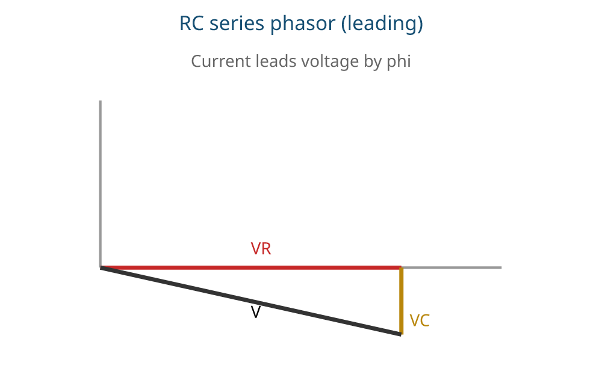
સર્કિટ: R અને C સીરીઝમાં v = Vm sin wt પર. એક જ કરંટ I. VR = I R (ફેઝમાં), VC = I XC (90° પાછળ), XC = 1/(wC).
Power derivation (પાવર તારવણી): i = Im sin(wt+phi) (કરંટ આગળ) સાથે:
Power triangle (પાવર ત્રિકોણ): P = V I cos phi (વોટ), Q = -V I sin phi (VAR, કેપેસિટિવ માટે નકારાત્મક), S = V I (VA). cos phi = R/Z. કેપેસિટર સરેરાશ પાવર વાપરતું નથી.
Q4 · Parallel circuits, resonance and 3-phase basicsપ્ર.4 · પેરેલલ સર્કિટ, રેઝોનન્સ અને 3-ફેઝ પાયા
Q.4 (a) Delta load: IL=17.32 A, Z=40 ohm/phase, PF=0.8 lag. Find (1) Phase current (2) Line voltage and power.પ્ર.4 (અ) ડેલ્ટા લોડ: IL=17.32 A, Z=40 ohm/ફેઝ, PF=0.8 lag. (1) ફેઝ કરંટ (2) લાઈન વોલ્ટેજ અને પાવર શોધો.3 marks3 ગુણ
Given: Delta, IL = 17.32 A, Z = 40 ohm, cos phi = 0.8 lagging.
(1) Phase current: In delta, IL = √3 Iph → Iph = IL√3 = 10 A.
(2) Line voltage: Vph = Iph Z = 10×40 = 400 V. In delta, VL = Vph = 400 V.
Power: P = √3 VL IL cos phi = 1.732×400×17.32×0.8 = 9600 W = 9.6 kW. Check: P = 3 Vph Iph cos phi = 3×400×10×0.8 = 9600 W.
આપેલ: ડેલ્ટા, IL = 17.32 A, Z = 40 ohm, cos phi = 0.8 lagging.
(1) ફેઝ કરંટ: ડેલ્ટામાં, IL = √3 Iph → Iph = 17.32/1.732 = 10 A.
(2) લાઈન વોલ્ટેજ: Vph = Iph Z = 10×40 = 400 V. ડેલ્ટામાં, VL = Vph = 400 V.
Power (પાવર): P = √3 VL IL cos phi = 9600 W = 9.6 kW.
Q.4 (b) Give comparison of series and parallel resonance.પ્ર.4 (બ) સીરીઝ અને પેરેલલ રેઝોનન્સની સરખામણી આપો.4 marks4 ગુણ
| Point | Series resonance | Parallel resonance |
|---|---|---|
| Condition | XL = XC | XL = XC (branch) |
| Impedance | Minimum, Z = R | Maximum |
| Current | Maximum | Minimum (line) |
| Voltage | VL = VC > V (magnification) | V same for all branches |
| PF | Unity | Unity (line) |
| Q factor | Q = XL/R | Q = R/XL (or w0L/R) |
| Use | Tuning, voltage magnification | Filter, PF correction |
Both resonate at f0 = 1/(2 pi√(LC)), but series gives max current and parallel gives max impedance.
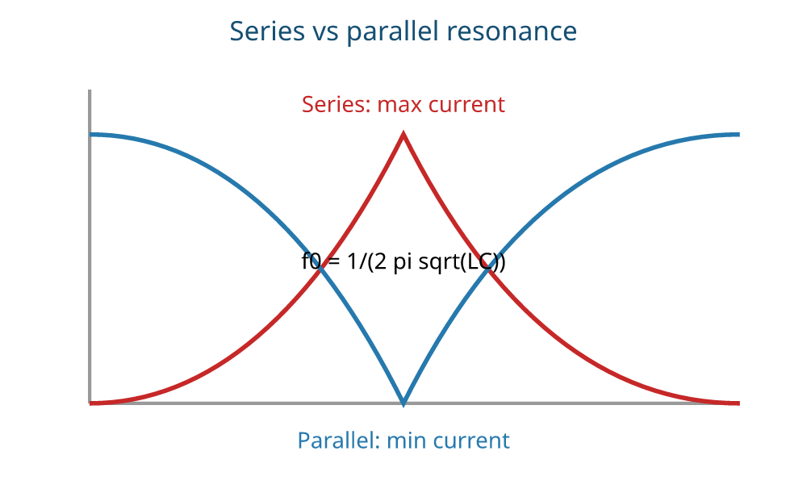
| મુદ્દો | સીરીઝ રેઝોનન્સ | પેરેલલ રેઝોનન્સ |
|---|---|---|
| શરત | XL = XC | XL = XC (શાખા) |
| ઇમ્પિડન્સ | ન્યૂનતમ, Z = R | મહત્તમ |
| કરંટ | મહત્તમ | ન્યૂનતમ (લાઈન) |
| વોલ્ટેજ | VL = VC > V | બધી શાખાઓમાં સમાન |
| PF | યુનિટી | યુનિટી (લાઈન) |
| ઉપયોગ | ટ્યુનિંગ, વોલ્ટેજ મેગ્નિફિકેશન | ફિલ્ટર, PF સુધારો |
બંને f0 = 1/(2 pi√(LC)) પર રેઝોનેટ થાય છે, પણ સીરીઝ મહત્તમ કરંટ અને પેરેલલ મહત્તમ ઇમ્પિડન્સ આપે છે.
Q.4 (c) Explain admittance and vector method of solving parallel AC circuit.પ્ર.4 (ક) એડમિટન્સ અને વેક્ટર પદ્ધતિથી પેરેલલ AC સર્કિટનો ઉકેલ સમજાવો.7 marks7 ગુણ
Admittance method: In parallel, voltage V is common, currents add as phasors. Convert each branch impedance Z = R+jX to admittance Y = 1/Z = G+jB, where G = RR2+X2, B = -XR2+X2. Add: Y = ΣG + jΣB.
Vector method: Draw V as reference. For each branch, draw current phasor at angle phi = tan-1(X/R) (lag for inductive, lead for capacitive). Add current phasors graphically (parallelogram law) to get total I. Then Z = V/I, PF = cos phi.
Steps: (1) Find each branch current magnitude and angle. (2) Resolve into active (in-phase) and reactive components. (3) Sum active: Iactive = Σ I cos phi, reactive: Ireactive = Σ I sin phi. (4) Total I = sqrt(Iactive2+Ireactive2), phi = tan-1(Ireactive/Iactive).
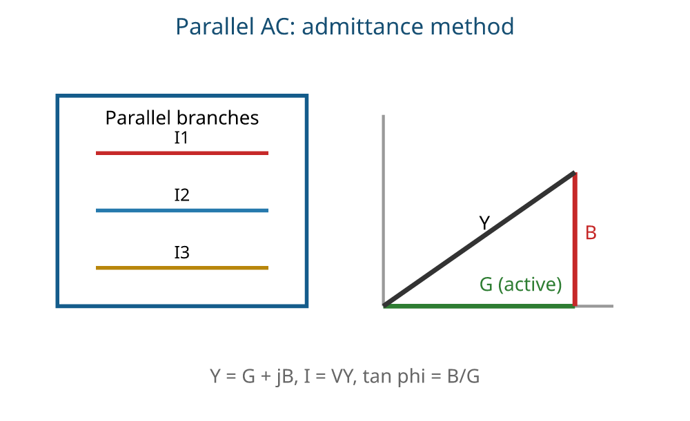
Admittance method (એડમિટન્સ પદ્ધતિ): પેરેલલમાં, વોલ્ટેજ V સામાન્ય છે, કરંટ ફેઝર તરીકે ઉમેરાય છે. દરેક શાખા ઇમ્પિડન્સ Z = R+jX ને એડમિટન્સ Y = 1/Z = G+jB માં ફેરવો, જ્યાં G = RR2+X2, B = -XR2+X2. ઉમેરો: Y = ΣG + jΣB.
Vector method (વેક્ટર પદ્ધતિ): V ને સંદર્ભ તરીકે દોરો. દરેક શાખા માટે, કરંટ ફેઝર phi = tan-1(X/R) કોણે દોરો (ઇન્ડક્ટિવ માટે પાછળ, કેપેસિટિવ માટે આગળ). કરંટ ફેઝરો ગ્રાફિકલી ઉમેરો (સમાંતર ચતુર્ભુજ નિયમ) થી કુલ I મેળવો. પછી Z = V/I, PF = cos phi.
Q.4 (a) OR Prove sum of three-phase voltages is zero in balanced system.પ્ર.4 (અ) OR સાબિત કરો કે બેલેન્સ્ડ 3-ફેઝમાં ત્રણ વોલ્ટેજનો સરવાળો શૂન્ય છે.3 marks3 ગુણ
Balanced 3-phase voltages (RMS phasors):
Sum: VR+ VY+ VB = V[1 + cos(-120)+j sin(-120) + cos(-240)+j sin(-240)]
Hence phasor sum is zero. Instantaneously, vR+vY+vB = Vm[sin wt + sin(wt-120°)+sin(wt-240°)] = 0 at every instant. Therefore no neutral current in balanced star load.
બેલેન્સ્ડ 3-ફેઝ વોલ્ટેજ (RMS ફેઝર):
સરવાળો: VR+ VY+ VB = V[1 + cos(-120)+j sin(-120) + cos(-240)+j sin(-240)]
તેથી ફેઝર સરવાળો શૂન્ય છે. ત્વરિત રીતે, vR+vY+vB = 0 દરેક ક્ષણે. તેથી બેલેન્સ્ડ સ્ટાર લોડમાં ન્યુટ્રલ કરંટ નથી.
Q.4 (b) OR Explain Q factor of AC parallel circuit.પ્ર.4 (બ) OR AC પેરેલલ સર્કિટનો Q ફેક્ટર સમજાવો.4 marks4 ગુણ
Q factor (quality factor): Measure of sharpness of resonance. For parallel RLC:
where w0 = 1/√(LC) is resonant angular frequency. High Q means sharp resonance, high impedance, narrow bandwidth.
Bandwidth: BW = f0Q (Hz). Higher Q → smaller BW → more selective.
Voltage magnification: At resonance, voltage across L/C is Q times supply voltage (for series). For parallel, current magnification is Q.
Q = 2 pi × (maximum energy stored)/(energy lost per cycle).
Q factor (Q ફેક્ટર): રેઝોનન્સની તીવ્રતાનું માપ. પેરેલલ RLC માટે:
જ્યાં w0 = 1/√(LC) એ રેઝોનન્ટ કોણીય આવૃત્તિ છે. ઊંચો Q એટલે તીવ્ર રેઝોનન્સ, ઊંચો ઇમ્પિડન્સ, સાંકડો બેન્ડવિડ્થ.
બેન્ડવિડ્થ: BW = f0Q (Hz). ઊંચો Q → નાનો BW → વધુ પસંદગીયુક્ત.
Q.4 (c) OR Z1=6+j8, Z2=8-j6 parallel, 230 V 50 Hz. Find admittance, current, PF.પ્ર.4 (ક) OR Z1=6+j8, Z2=8-j6 પેરેલલ, 230 V 50 Hz. એડમિટન્સ, કરંટ, PF શોધો.7 marks7 ગુણ
Given: Z1 = 6+j8 ohm (inductive), Z2 = 8-j6 ohm (capacitive), V = 230 V.
Branch admittances:
Total admittance:
Current: I = V Y = 230×(0.14-j0.02) = 32.2-j4.6 A. Magnitude |I| = 230×0.1414 = 32.5 A.
Power factor: PF = G|Y| = 0.99 lagging (net inductive, B negative). Angle phi = 8.13° lagging.
આપેલ: Z1 = 6+j8 ohm (ઇન્ડક્ટિવ), Z2 = 8-j6 ohm (કેપેસિટિવ), V = 230 V.
Branch admittance (શાખા એડમિટન્સ):
Total admittance (કુલ એડમિટન્સ):
કરંટ: I = V Y = 32.2-j4.6 A. પરિમાણ |I| = 32.5 A.
પાવર ફેક્ટર: PF = G/|Y| = 0.99 lagging.
Q5 · Three-phase systemsપ્ર.5 · થ્રી-ફેઝ સિસ્ટમ
Q.5 (a) Three coils Z=3+j4 ohm delta across 440 V 50 Hz. Find line current, kW, kVA.પ્ર.5 (અ) ત્રણ કોઈલ Z=3+j4 ohm ડેલ્ટામાં 440 V 50 Hz પર. લાઈન કરંટ, kW, kVA શોધો.3 marks3 ગુણ
Given: Z = 3+j4 ohm, |Z| = 5 ohm, delta, VL = 440 V.
Phase values: Vph = VL = 440 V. Iph = Vph|Z| = 88 A.
Line current: IL = √3 Iph = 1.732×88 = 152.4 A.
Power factor: cos phi = R|Z| = 0.6 lagging.
Power: P = √3 VL IL cos phi = 1.732×440×152.4×0.6 = 69.7 kW. kVA = √3 VL IL/1000 = 116.2 kVA.
આપેલ: Z = 3+j4 ohm, |Z| = 5 ohm, ડેલ્ટા, VL = 440 V.
Phase values (ફેઝ કિંમતો): Vph = VL = 440 V. Iph = 440/5 = 88 A.
Line current (લાઈન કરંટ): IL = √3 Iph = 152.4 A.
Power factor (પાવર ફેક્ટર): cos phi = 3/5 = 0.6 lagging.
Power (પાવર): P = √3 VL IL cos phi = 69.7 kW. kVA = 116.2 kVA.
Q.5 (b) Explain principle of generation of three-phase alternating voltage.પ્ર.5 (બ) થ્રી-ફેઝ ઓલ્ટરનેટિંગ વોલ્ટેજના જનરેશનનો સિદ્ધાંત સમજાવો.4 marks4 ગુણ
Principle: Three identical coils (R, Y, B) are placed 120° apart on a stator. A common rotor with magnetic field rotates at constant speed w. Each coil cuts flux sinusoidally, inducing sine EMF, but shifted by 120° because of physical displacement.
Construction: Stator has 3 windings, rotor is electromagnet (or vice versa). Rotation at speed N gives frequency f = PN/120 (P = poles).
Result: Three voltages of same magnitude/frequency, 120° apart in phase, form a balanced 3-phase system. Sum at any instant is zero.
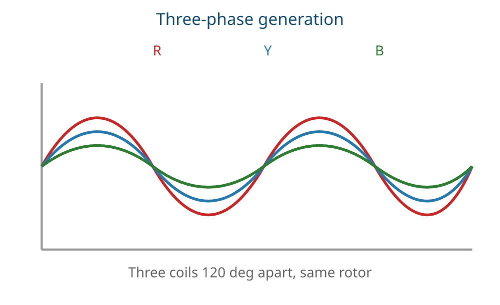
Principle (સિદ્ધાંત): ત્રણ સમાન કોઈલ (R, Y, B) સ્ટેટર પર 120° અંતરે મૂકેલા છે. સામાન્ય રોટર ચુંબકીય ક્ષેત્ર સાથે સતત ઝડપ w થી ફરે છે. દરેક કોઈલ ફ્લક્સને સાઈનસોઈડલ કાપે છે, સાઈન EMF પ્રેરિત કરે છે, પણ ભૌતિક સ્થાનને કારણે 120° ખસેડેલું.
રચના: સ્ટેટરમાં 3 વાઈન્ડિંગ, રોટર ઇલેક્ટ્રોમેગ્નેટ (અથવા ઊલટું). ઝડપ N થી આવૃત્તિ f = PN/120.
પરિણામ: સમાન પરિમાણ/આવૃત્તિના ત્રણ વોલ્ટેજ, ફેઝમાં 120° અંતરે, બેલેન્સ્ડ 3-ફેઝ સિસ્ટમ બનાવે છે. કોઈપણ ક્ષણે સરવાળો શૂન્ય.
Q.5 (c) Derive line-phase relations for 3-phase star system.પ્ર.5 (ક) 3-ફેઝ સ્ટાર સિસ્ટમમાં લાઈન-ફેઝ સંબંધ તારવો.7 marks7 ગુણ
Star connection: Three phase ends joined at neutral N, other ends to lines R, Y, B. Phase voltage Vph is line-to-neutral, line voltage VL is line-to-line.
Voltage relation: VRN = Vph angle 0, VYN = Vph angle -120. Line voltage VRY = VRN - VYN.
Hence VL = √3 Vph, leading Vph by 30°.
Current relation: Line current flows through phase winding, so IL = Iph.
Power: P = √3 VL IL cos phi = 3 Vph Iph cos phi.
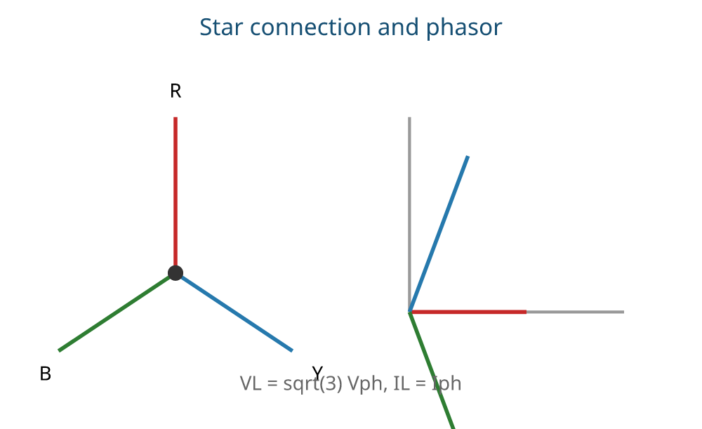
Star connection (સ્ટાર જોડાણ): ત્રણ ફેઝ છેડા ન્યુટ્રલ N પર જોડાયેલા, બીજા છેડા લાઈન R, Y, B પર. ફેઝ વોલ્ટેજ Vph એ લાઈન-ટુ-ન્યુટ્રલ, લાઈન વોલ્ટેજ VL એ લાઈન-ટુ-લાઈન છે.
Voltage relation (વોલ્ટેજ સંબંધ): VRN = Vph angle 0, VYN = Vph angle -120. લાઈન વોલ્ટેજ VRY = VRN - VYN.
તેથી VL = √3 Vph, Vph કરતાં 30° આગળ.
Current relation (કરંટ સંબંધ): લાઈન કરંટ ફેઝ વાઈન્ડિંગમાંથી વહે છે, તેથી IL = Iph.
Power (પાવર): P = √3 VL IL cos phi = 3 Vph Iph cos phi.
Q.5 (a) OR State comparison between single and three-phase systems.પ્ર.5 (અ) OR સિંગલ અને થ્રી-ફેઝ સિસ્ટમ વચ્ચેની સરખામણી જણાવો.3 marks3 ગુણ
| Point | Single-phase | Three-phase |
|---|---|---|
| Wires | 2 (or 3 with neutral) | 3 or 4 |
| Power | P = V I cos phi | P = √3 VL IL cos phi (1.73×) |
| Motor | Needs starter, pulsating torque | Self-starting, smooth torque |
| Efficiency | Lower for same conductor | Higher, less copper |
| Use | Domestic, small loads | Industrial, motors, power |
Three-phase transmits more power with same line current and is preferred for industry.
| મુદ્દો | સિંગલ-ફેઝ | થ્રી-ફેઝ |
|---|---|---|
| તાર | 2 (અથવા 3 ન્યુટ્રલ સાથે) | 3 અથવા 4 |
| પાવર | P = V I cos phi | P = √3 VL IL cos phi (1.73×) |
| મોટર | સ્ટાર્ટર જોઈએ, ધબકતો ટોર્ક | સ્વયં-સ્ટાર્ટ, સ્મૂથ ટોર્ક |
| કાર્યક્ષમતા | ઓછી | વધુ, ઓછું કોપર |
| ઉપયોગ | ઘરેલુ, નાના લોડ | ઔદ્યોગિક, મોટર, પાવર |
Q.5 (b) OR Star load: 5 kW, IL=10 A, VL=400 V. Find Iph, Vph, Z, PF.પ્ર.5 (બ) OR સ્ટાર લોડ: 5 kW, IL=10 A, VL=400 V. Iph, Vph, Z, PF શોધો.4 marks4 ગુણ
Given: Star, P = 5 kW = 5000 W, IL = 10 A, VL = 400 V.
Phase current: Star: Iph = IL = 10 A.
Phase voltage: Vph = VL√3 = 230.9 V (approx 231 V).
Impedance: Z = VphIph = 23.1 ohm.
Power factor: P = √3 VL IL cos phi → cos phi = 50006928 = 0.722 lagging (assumed inductive).
આપેલ: સ્ટાર, P = 5000 W, IL = 10 A, VL = 400 V.
Phase current (ફેઝ કરંટ): સ્ટાર: Iph = IL = 10 A.
Phase voltage (ફેઝ વોલ્ટેજ): Vph = VL/√3 = 230.9 V (લગભગ 231 V).
Impedance (ઇમ્પિડન્સ): Z = Vph/Iph = 23.1 ohm.
Power factor (પાવર ફેક્ટર): cos phi = 5000/(1.732×400×10) = 0.722 lagging.
Q.5 (c) OR Derive line-phase relations for 3-phase delta system.પ્ર.5 (ક) OR 3-ફેઝ ડેલ્ટા સિસ્ટમમાં લાઈન-ફેઝ સંબંધ તારવો.7 marks7 ગુણ
Delta connection: Three windings joined end-to-end forming a triangle. Each winding is directly across two lines, so phase voltage equals line voltage.
Voltage relation: VRY is across R-Y winding, so VL = Vph.
Current relation: Line current is phasor sum of two phase currents. For balanced load, IRY = Iph angle 0, IBR = Iph angle -120 (relative). Line current IR = IRY - IBR.
Hence IL = √3 Iph, lagging Vph by 30° (for inductive load).
Power: P = √3 VL IL cos phi = 3 Vph Iph cos phi (same as star).
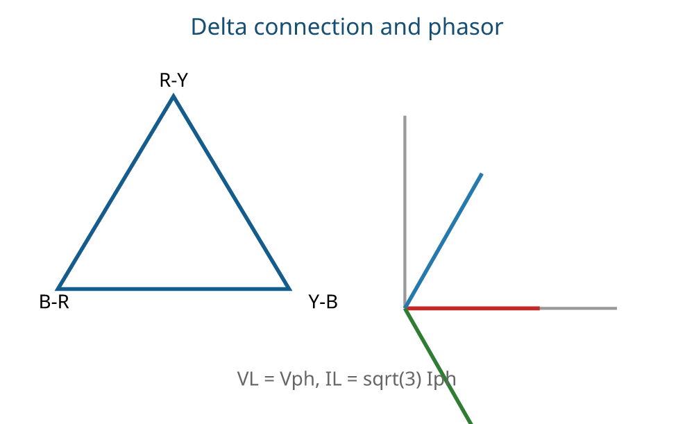
Delta connection (ડેલ્ટા જોડાણ): ત્રણ વાઈન્ડિંગ છેડાથી છેડા જોડાઈને ત્રિકોણ બનાવે છે. દરેક વાઈન્ડિંગ સીધી બે લાઈનો વચ્ચે છે, તેથી ફેઝ વોલ્ટેજ લાઈન વોલ્ટેજ જેટલું છે.
Voltage relation (વોલ્ટેજ સંબંધ): VRY એ R-Y વાઈન્ડિંગ પર છે, તેથી VL = Vph.
Current relation (કરંટ સંબંધ): લાઈન કરંટ એ બે ફેઝ કરંટનો ફેઝર સરવાળો છે. બેલેન્સ્ડ લોડ માટે:
તેથી IL = √3 Iph.
Power (પાવર): P = √3 VL IL cos phi = 3 Vph Iph cos phi (સ્ટાર જેટલો જ).